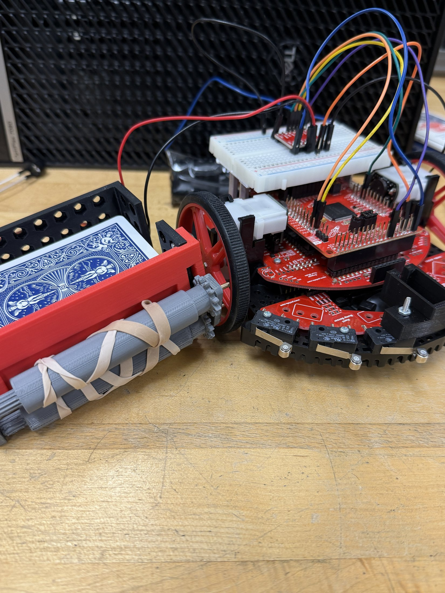

May 2028
Rochester Institute of Technology
B.S. double major in Computer Engineering Technology and Electrical Engineering Technology.
Electrical Engineering Technology + Computer Engineering Technology
Hands-on embedded systems, digital logic, robotics, and circuit design portfolio.
RIT double-major candidate building practical hardware/software systems: MSP432 robotics, FPGA logic, power electronics prototypes, sensor-data workflows, and lab-validated analog circuits.

B.S. double major in Computer Engineering Technology and Electrical Engineering Technology.
Projects connect circuits, firmware, digital logic, motors, sensors, and measurement.
Strong emphasis on physical prototyping, validation, debugging, and clear technical documentation.
Resume Snapshot
May 2028
B.S. double major in Computer Engineering Technology and Electrical Engineering Technology.
Jun 2024 - Aug 2024
Integrated sensors and data-acquisition hardware for environmental monitoring research, improving data accuracy and supporting real-time analysis and visualization work with UNC Chapel Hill and Morehead Planetarium.
Sep 2025 - Present
Routed harness systems, performed continuity testing, verified voltage paths, and supported diagnosis of connector, signal, drivetrain, and control-module issues against safety and performance needs.
Selected Work
Embedded Systems / Audio Signaling
Built a robotics-based sound transmission demo that played "Twinkle, Twinkle, Little Star" through a controlled embedded setup. The project connected timing logic, signal routing, wiring discipline, and hardware debugging into a working demonstration with recognizable audio output.
Microcontrollers / Robotics
Designed and built an automated card-dealing robot using an MSP432, TB6612FNG motor driver, DC gearbox motor, servo, and 3D-printed dispenser. The system used GPIO direction control, TimerA PWM speed control, and staged validation to dispense cards reliably.
View full project write-upDigital Systems / FPGA
Designed and validated digital logic for binary inputs, decoded output states, and seven-segment display behavior. The work connects truth-table development, Boolean reasoning, FPGA-board implementation, and visual verification on real hardware.
Analog Circuits / Measurement
Assembled and evaluated resistor-capacitor networks using external test leads for measurement. The project emphasized node selection, component placement, expected-versus-measured behavior, and methodical validation.
Power Electronics / Circuit Design
Prototyped a power supply circuit using bulk capacitance, passive components, and accessible test nodes. The build demonstrates power-conditioning fundamentals, stable wiring, load-aware testing, and filtering behavior.
Technical Profile
Power supply prototyping, circuit analysis, analog filters, wire harness routing, soldering, and bench measurement.
MSP432/MSP430, embedded C, PWM control, FPGA boards, VHDL, Quartus, ModelSim, and digital logic design.
C/C++, Python, Java, R, MATLAB, Altium, Microsoft Office 365, and technical documentation.
Available for internships, co-ops, and entry-level engineering roles
Rochester, NY · jd1280@rit.edu · +1 910-405-9317